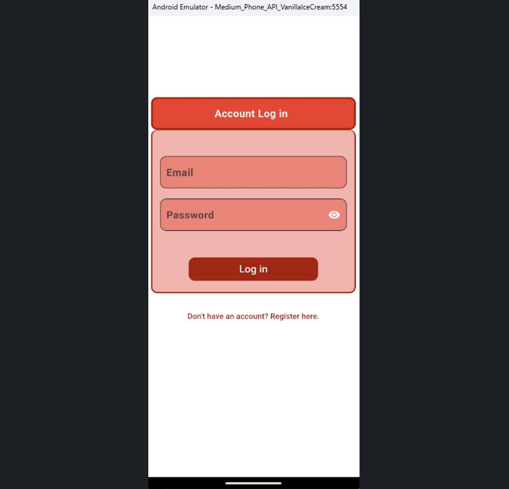
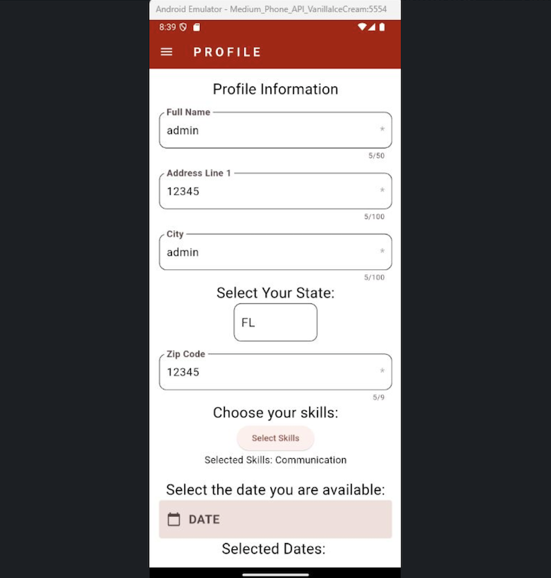
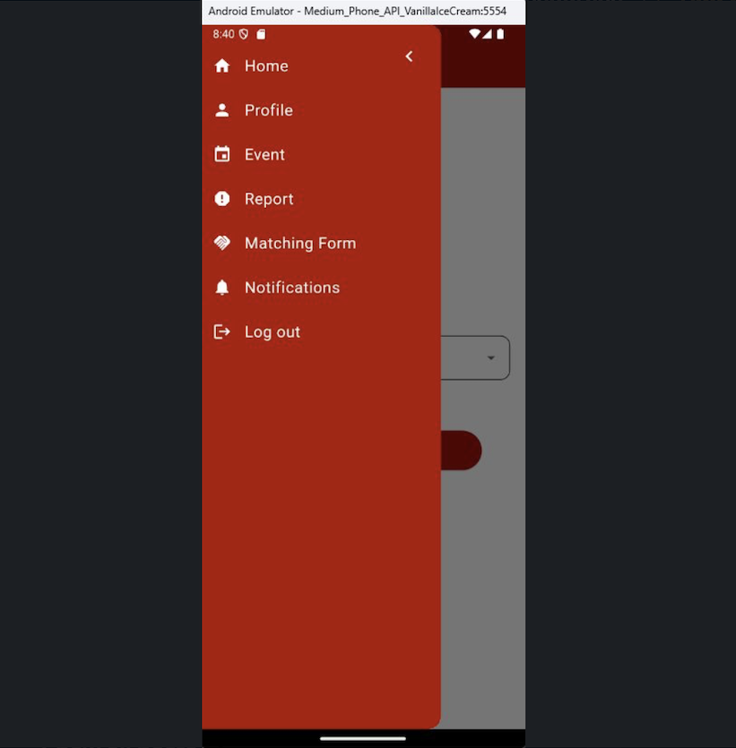
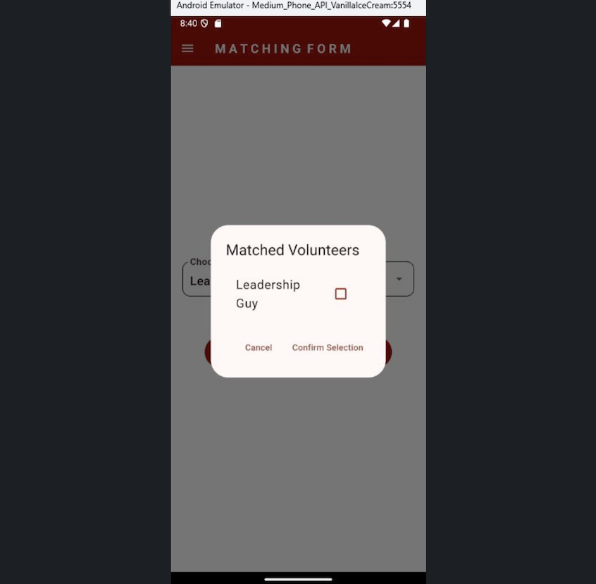
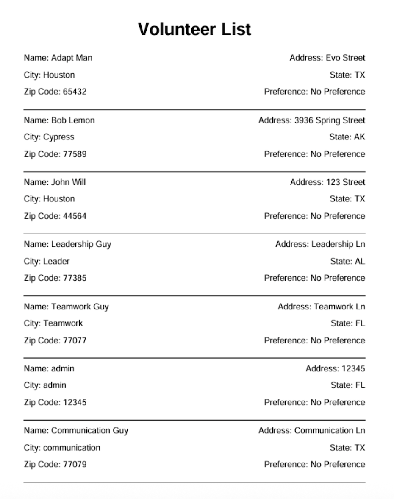
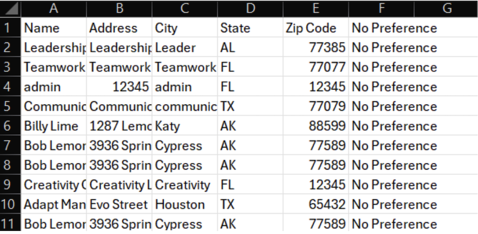
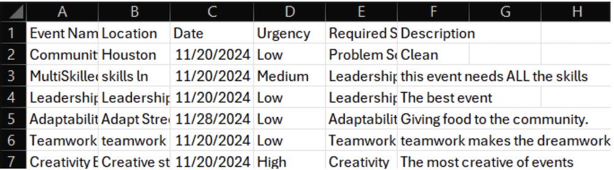
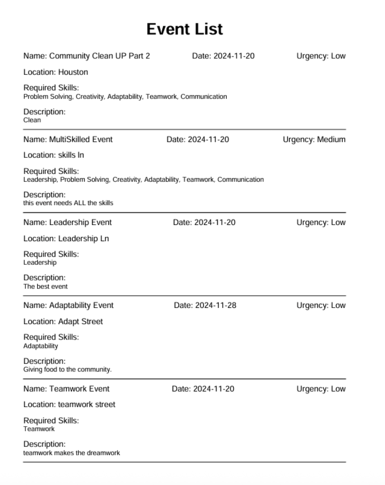

Volunteer Matching App
A Flutter-driven mobile app designed to connect volunteers to events based on their individual preferences.
Overview
A cross-platform mobile app built with Flutter and Firebase to streamline volunteer and event coordination. The app utilizes a custom preference-based algorithm to assign volunteers to events. It also provides tools for user-authentication, event management (for administrators) and user-based notifications. The app was designed with a clean, responsive interface, ensuring accessibility and consistency across both IOS and Android devices. For debugging purposes, our team utilized unit tests and achieved over 81% code coverage to ensure the backend functioned as intended.Tech Stack
Flutter | Firebase | FireStore | Dart | GitHubScreenshots








Other Features
- Offers user-autherntication for two different account types: administrators and volunteers, each with unique features.
- Administrators can generate detailed reports of both their events and corresponding volunteers in multiple formats (CSV, PDF).
- User-specific notifications allow users to be aware of new events, event changes, and new assignments.